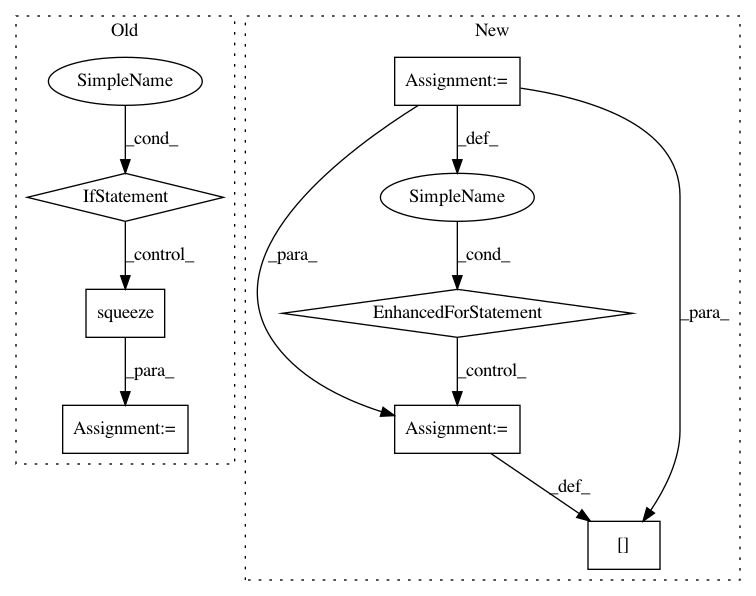

a998e7a1fa996edb4bcc1b34a0df5967ed6ec9e2,torch_geometric/utils/convert.py,,to_networkx,#Any#Any#Any#Any#Any#,53
Before Change
G = nx.DiGraph()
G.add_nodes_from(range(data.num_nodes))
values = {key: data[key].squeeze().tolist() for key in data.keys}
for i, (u, v) in enumerate(data.edge_index.t().tolist()):
if to_undirected and v > u:
After Change
G.add_nodes_from(range(data.num_nodes))
values = {}
for key, item in data:
if torch.is_tensor(item):
values[key] = item.squeeze().tolist()
else:
values[key] = item
if isinstance(values[key], (list, tuple)) and len(values[key]) == 1:
values[key] = item[0]
for i, (u, v) in enumerate(data.edge_index.t().tolist()):
if to_undirected and v > u:
continue
In pattern: SUPERPATTERN
Frequency: 3
Non-data size: 7
Instances
Project Name: rusty1s/pytorch_geometric
Commit Name: a998e7a1fa996edb4bcc1b34a0df5967ed6ec9e2
Time: 2020-05-13
Author: matthias.fey@tu-dortmund.de
File Name: torch_geometric/utils/convert.py
Class Name:
Method Name: to_networkx
Project Name: IBM/adversarial-robustness-toolbox
Commit Name: 5ed0c81c75f9360c11c60ed5b4bb367375ebb2bb
Time: 2020-10-30
Author: beat.buesser@ie.ibm.com
File Name: art/defences/preprocessor/jpeg_compression.py
Class Name: JpegCompression
Method Name: __call__
Project Name: rusty1s/pytorch_geometric
Commit Name: 675b7884c09875486fdddffa2d8a6a12247ab4d7
Time: 2020-05-31
Author: matthias.fey@tu-dortmund.de
File Name: torch_geometric/utils/convert.py
Class Name:
Method Name: to_networkx